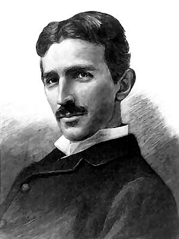

Pintura de Nikola Tesla
Nikola Tesla foi um inventor e engenheiro sérvio-americano, nascido em 10 de julho de 1856, no que hoje é a Croácia. Ele é mais conhecido por suas contribuições ao desenvolvimento da corrente alternada (CA), que revolucionou a transmissão de energia elétrica. Tesla também inventou a bobina que leva seu nome, usada em rádios e outros dispositivos de alta frequência.Tesla teve uma carreira cheia de invenções e patentes, mas enfrentou muitas dificuldades financeiras e reconhecimento tardio. Ele morreu em 7 de janeiro de 1943, em Nova York. Hoje, ele é lembrado como um dos maiores gênios da ciência e da tecnologia.
Tesla estudou engenharia elétrica no Politécnico Austríaco em Graz. Enquanto estava na graduação, estudou as utilizações da corrente alternada.
Em dezembro de 1878 deixou Graz eu cortou todas as relações com a sua família. Logo após, foi para Eslovénia, onde arranjou um primeiro emprego como engenheiro assistente durante um ano.
Tesla mais tarde, foi persuadido pelo seu pai a frequentar a Universidade Carolina em Praga, onde estudou na época do Verão de 1880.
Em 1880, mudou-se para Budapeste para trabalhar sob a direção de Tivadar Puskás numa companhia de telegrafia, a Companhia Nacional de Telefones.
Quando começaram as comunicações telefônicas em Budapeste em 1881, Tesla tornou-se o electricista-chefe da companhia, e mais tarde engenheiro do primeiro sistema telefônico do país.
Em 1882 deslocou-se para Paris, França para trabalhar como engenheiro na "Continental Edison Company".Em 1882, Tesla descobriu o campo magnético rotativo, um princípio fundamental da física e da base de todos os dispositivos que usam correntes alternadas.
Em junho de 1884, Tesla mudou-se para os Estados Unidos, estabelecendo-se em Nova Iorque, onde foi contratado para trabalhar para Thomas Edison.
Ao passar dos tempos as divergências de opinião entre Tesla e Thomas Edison, sobre corrente contínua, foi o motivo do desentendimento entre eles. Tesla havia criado uma forma eficiente de transmitir energia a grandes distâncias, mas perigoso em caso de acidente. Edison, que baseava suas tecnologias na corrente contínua, era contra Tesla.
Em 1887, consegue realizar um contrato com um grande investidor e vende a sua patente da corrente alternada a George Westinghouse, que convence o governo americano a adotar o modelo-padrão de corrente alternada como meio mais eficiente para a distribuição de energia elétrica, contrariando interesses de seu antigo empregador Thomas Edison e vencendo a "Guerra das correntes".
Quando viaja pelos Estados Unidos e Europa, a partir de 1891, apresenta novos ensaios científicos, detalhando insuspeitadas sobre a aplicação da corrente alternada de alta frequência e de várias outras descobertas.
Em 1889 Tesla construiu uma estação experimental em Colorado Springs, onde ele estudou as características da alta freqüência. Lá ele desenvolveu um potente rádio transmissor em um projeto singular, além de realizar experiências para estabelecer as leis da propagação das ondas de rádio.
Tesla também escreveu na "Century Magazine" de 1900, que a comunicação sem fio para qualquer ponto do globo era possível. E que suas experiências mostraram que o ar em sua pressão normal torna-se um condutor.
Tesla faleceu em 7 de janeiro de 1943 no Hotel New Yorker , onde viveu durante os últimos dez anos de sua vida. Deixando um grande legado para a humanidade.